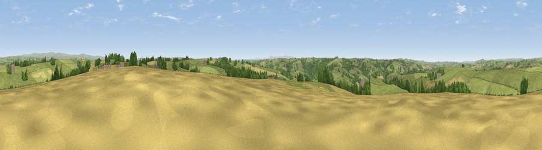

Viewpoint near Chittlehamholt
#14221 in England · top 24% of its area beats it · near Chittlehamholt · path 194 mWhere it is
The exact computed spot (SS 63825 22825). Click the marker for map links.
Public access: the nearest public right of way is about 194 m away — the final stretch may cross private land. Computed from Natural England's CRoW access layer and OpenStreetMap rights of way — not the legal definitive map. Always verify locally.
The view, rendered

A 360° render of this exact spot computed from the terrain model, tree cover and land cover — summer colours, afternoon light, calibrated against photographs of famous viewpoints. Real trees, hedges and buildings will differ in detail.
The panorama
Grey silhouette: terrain skyline in each direction (720 bearings, Earth curvature and refraction included). Dashed green: skyline with trees (+15 m) and buildings (+8 m) as obstacles. Blue strip: how far the ground is visible on each bearing.
Where the view opens
Wedge length = distance to the farthest visible ground on that bearing (vegetation-aware). Rings at 10, 25 and 50 km.
What fills the view
74% grassland · 13% cropland · 12% woodland ·
Angular shares of the visible panorama (visual magnitude), not map area. Landscape diversity 0.34 (0–1 Shannon).
Key numbers
More beautiful places nearby
The staircase of upgrades: each row has a higher view potential than everything closer. Driving times are estimates from straight-line distance, calibrated against real road routing — check an actual route before setting out.
| Place | Direction | Drive | Score |
|---|---|---|---|
| Hilltown | ENE · 2 km | ~5 min | 59.4 |
| Viewpoint near High Bickington | SW · 3 km | ~8 min | 62.2 |
| Viewpoint near Burrington | S · 5 km | ~10 min | 66.4 |
| Yollacombe Hill | N · 6 km | ~13 min | 70.2 |
| Viewpoint near Landkey | NW · 8 km | ~16 min | 74.0 |
| Codden Hill | NW · 9 km | ~17 min | 81.3 |
| Viewpoint near Croyde | NW · 24 km | ~40 min | 83.7 |
| Holdstone Hill | N · 25 km | ~40 min | 90.2 |
50.98867, -3.94158 · source: screening · position refined by local search. Computed location — check access rights before visiting.